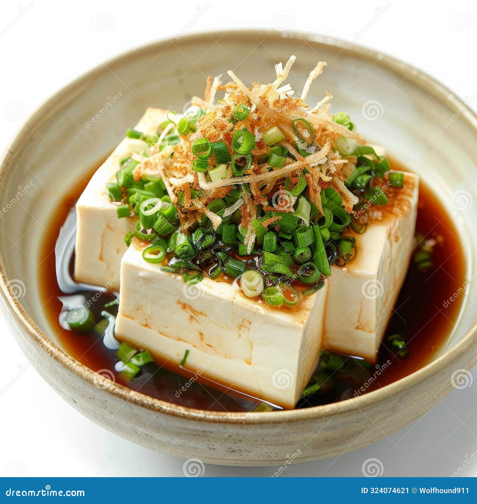

Chilled Tofu (Hiyayakko)

Description
A refreshing and healthy 3-minute side dish consisting of silky chilled tofu topped with scallions, bonito flakes, and tangy ponzu.
Ingredients
- Silken tofu: 1 block
- Chopped green onions: A pinch
- Katsuobushi (Bonito flakes): A handful
- Ponzu sauce: To taste
Steps
- Drain any excess water from the tofu and place it on a plate.
- Top with the green onions and bonito flakes.
- Pour the ponzu sauce over it and enjoy while chilled.
Home